/ “never-give-up”-track-cover-“modern-bite”
[ output ]
[ process-log ]
mission.......:
pretty simple — translate the “never-give-up” idea and keep the references vibe
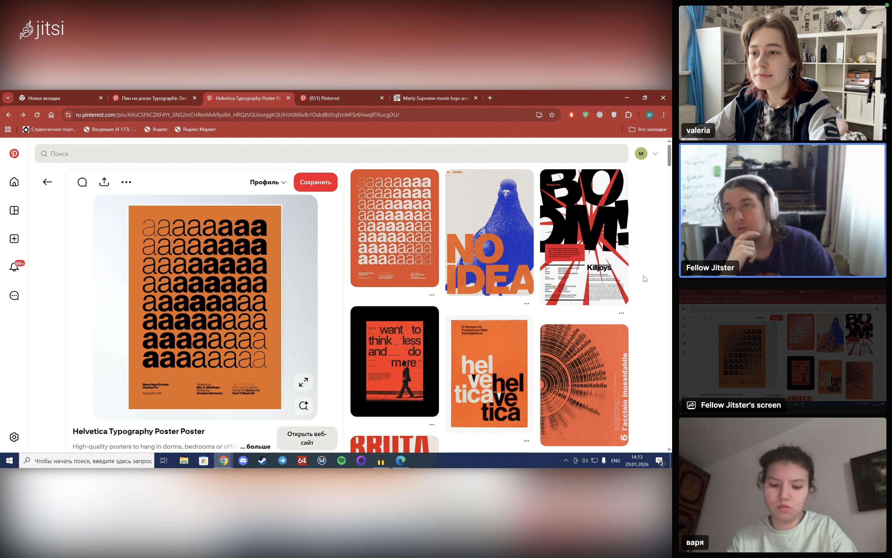
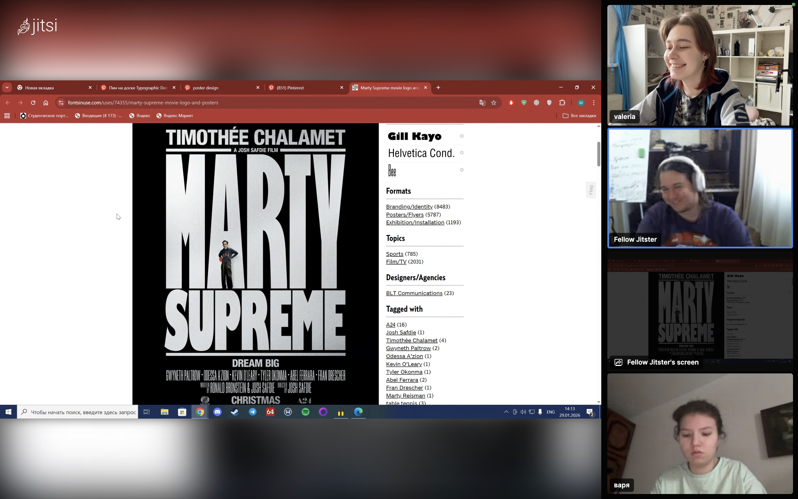
// we decided to go heavy with cold modernist typography, and toxic colours within a couple of hours we had several options
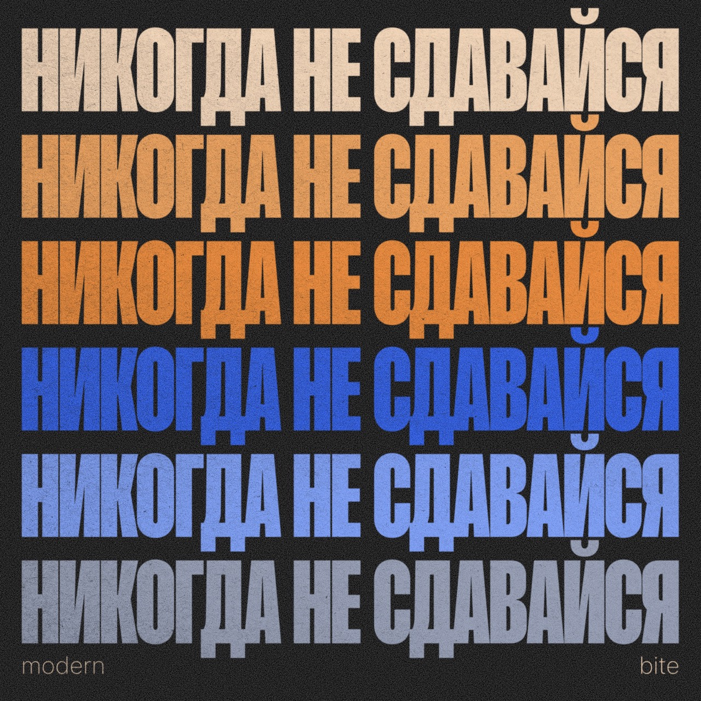
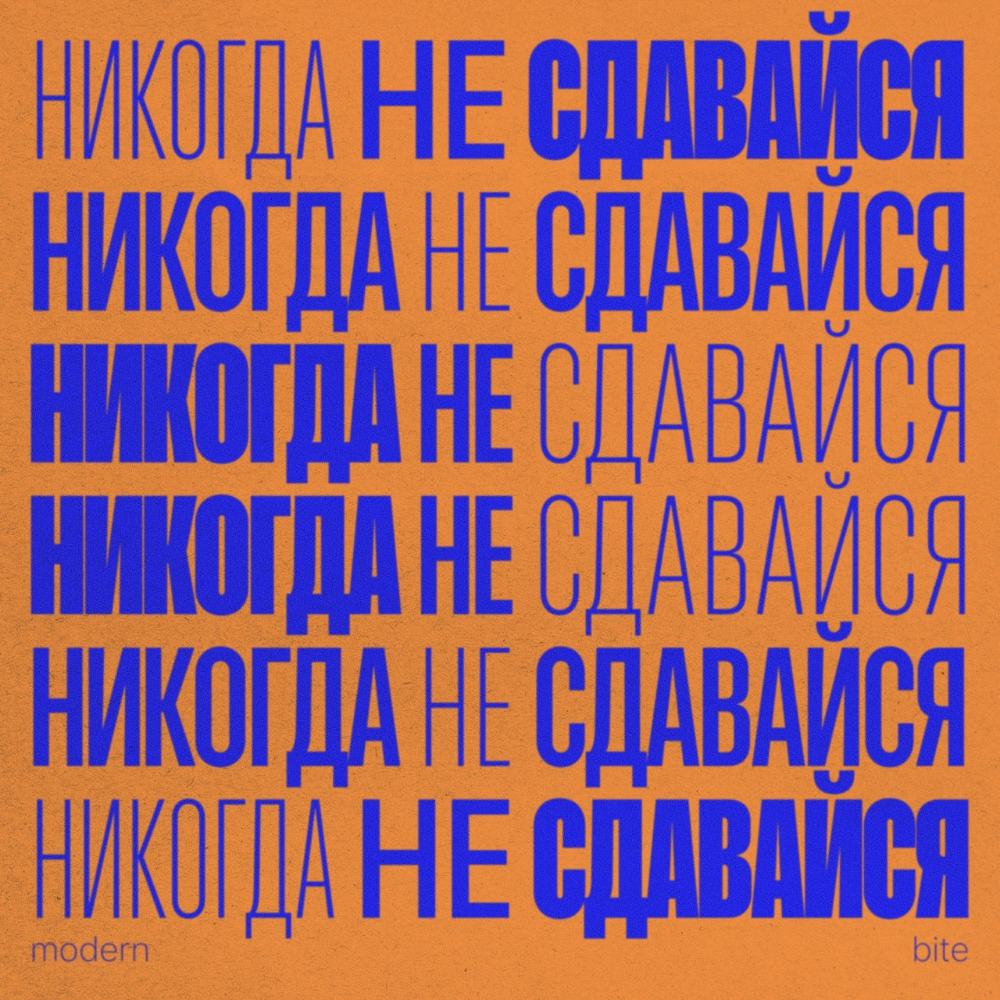
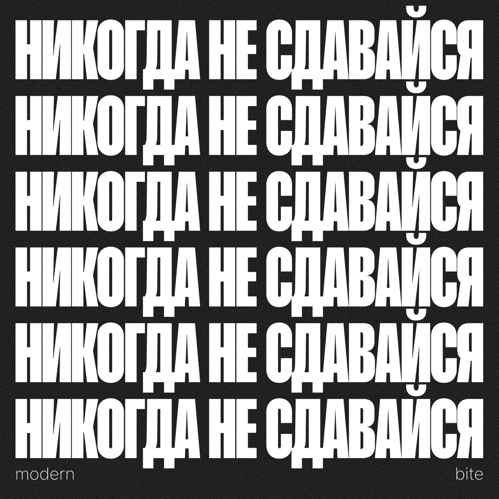
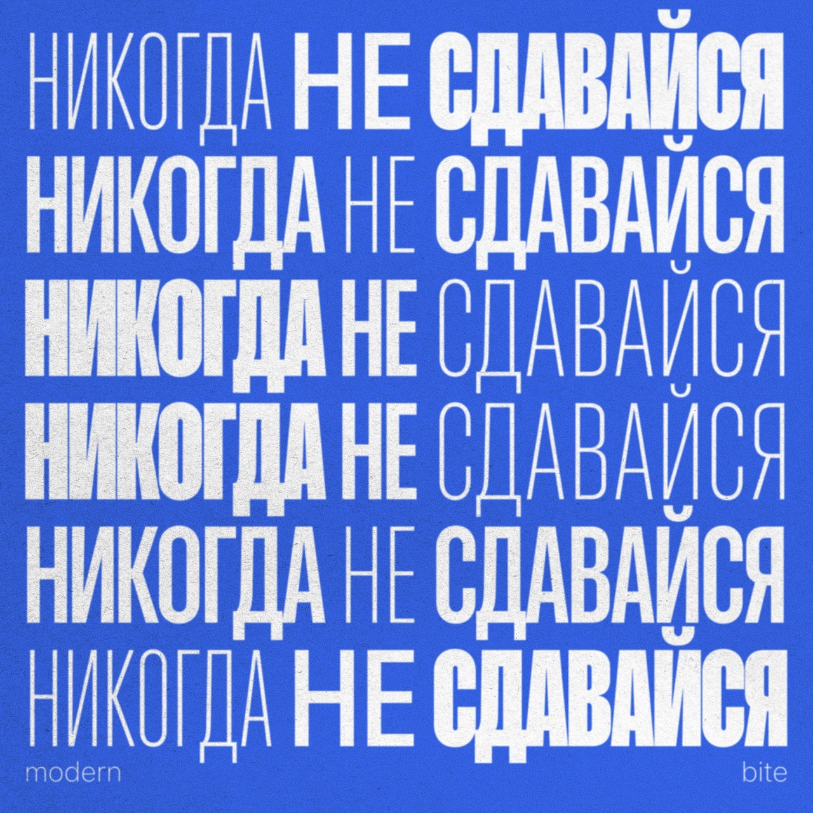
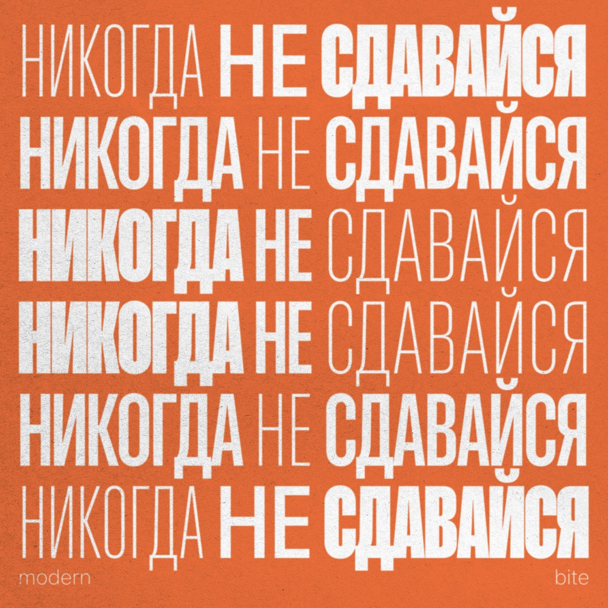
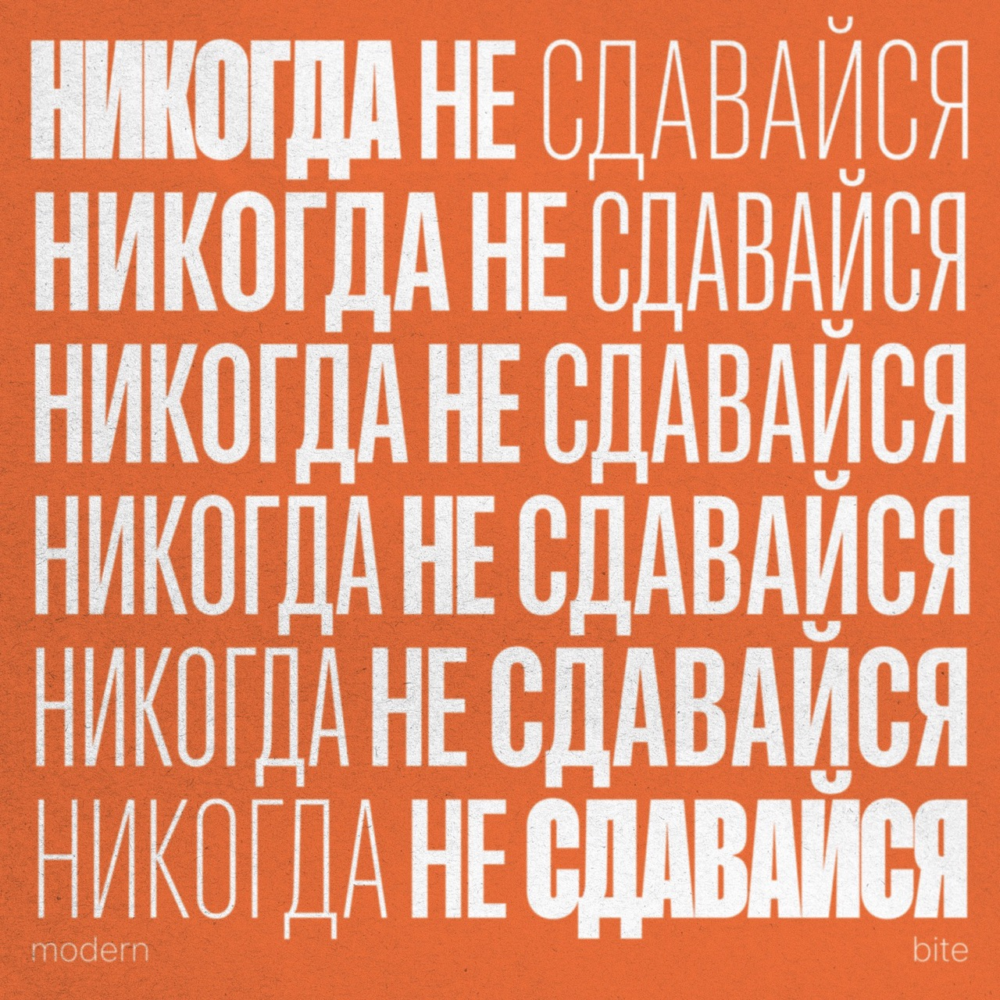
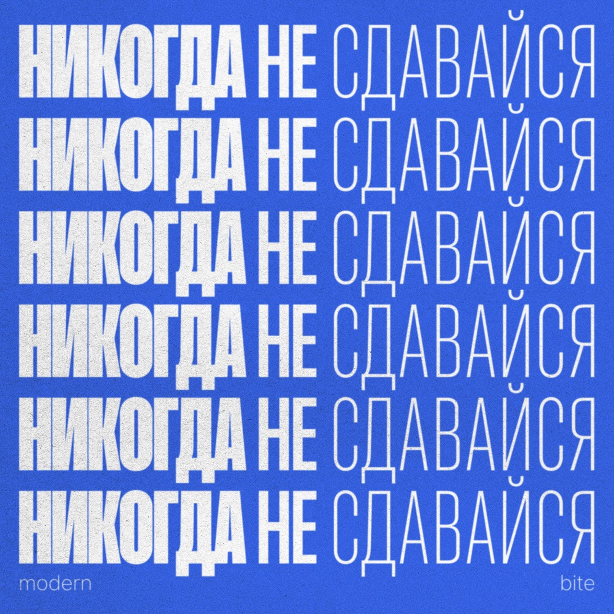
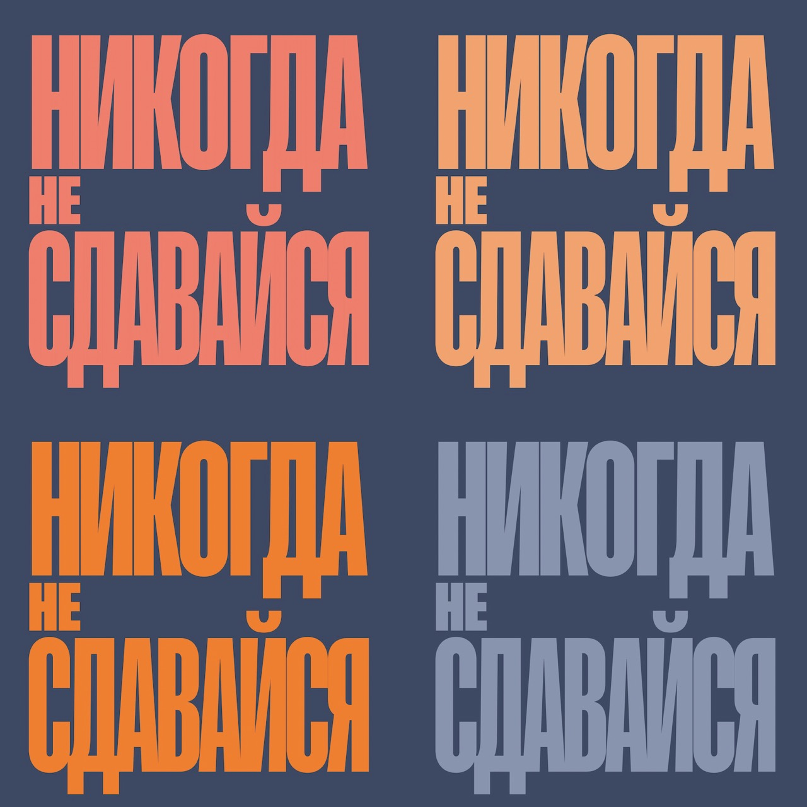
// the next day, the collectively unconscious punk spirit took over and we ended up making this beast:
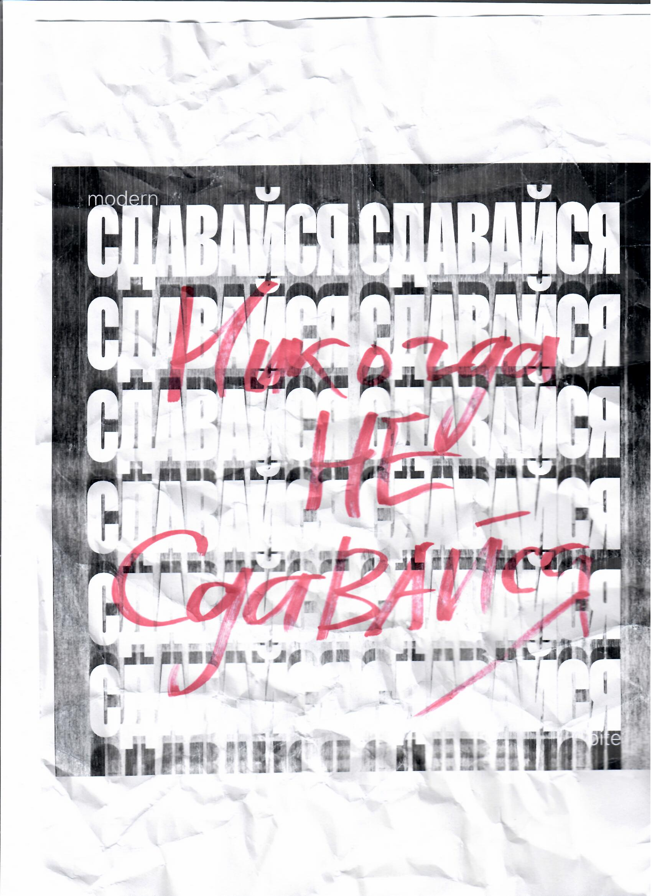
[ external-link ]